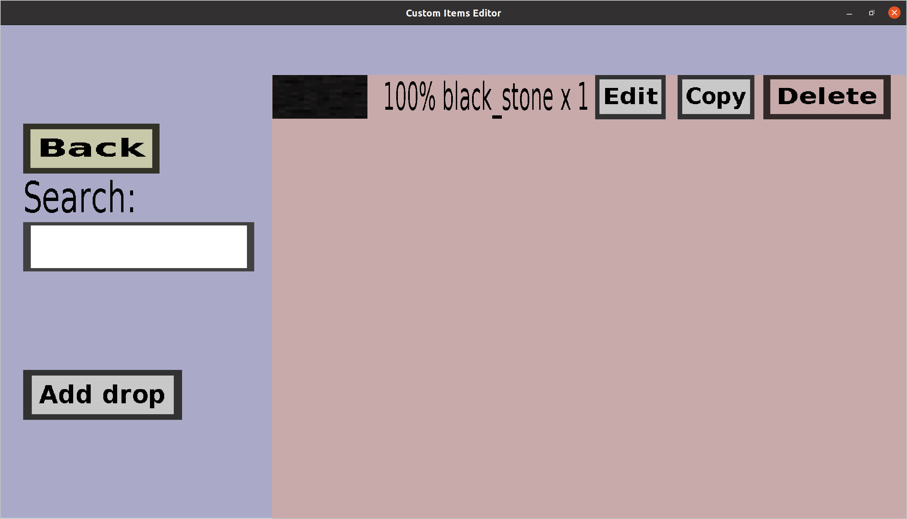

The block drops overview can be used to configure the items that will
be dropped when a custom block is destroyed. If your block simply has
100% chance to drop a black_stone block/item, it should look
like this:

On the left, there is
-
a Back button. Clicking it will take you back to the
block edit menu of the block you were
editing.
-
a Search field. If you type text in there, only the drops
whose description contains the text you type will be shown. This
could be useful if your block has many drops.
-
an Add drop button. Clicking it will take you to the
block drop edit menu, where you can
configure it.
The rest of the page is used to display the current list of block
drops. Note that the block drops displayed here are somewhat more
complicated than you might expect: each block drop can drop
multiple items and have some conditiosn like required items. For
each block drop, there is
- a description/summary on the right of an optional texture.
-
an Edit button on the right of the description. Clicking it
will take you to the block drop edit menu,
where you can edit it.
-
a Copy button between the Edit and Delete
button. Clicking it will take you to the block drop edit menu,
where you can create a new block drop. But, you won't be
creating it from scratch: all fields will be filled with the
values of the block drop you're copying.
-
a Delete button on the right. Clicking it will remove the
block drop.